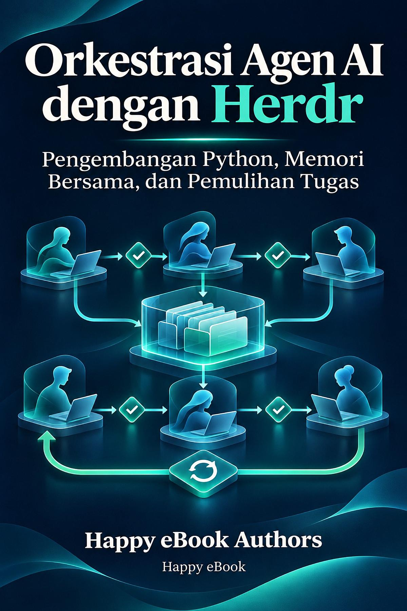

Orkestrasi Agen AI dengan Herdr
Pengembangan Python, Memori Bersama, dan Pemulihan Tugas

Orkestrasi Agen AI dengan Herdr
Pengembangan Python, Memori Bersama, dan Pemulihan Tugas
Orkestrasi Agen AI dengan Herdr menunjukkan cara mengubah beberapa agen AI menjadi tim kerja yang hasilnya dapat diperiksa dan dipulihkan. Dengan Herdr TUI dan contoh Python, buku ini bergerak dari kontrak kalkulator sederhana menuju pengembangan web, riset teknis, alur kerja otomatis, dan antrean pekerjaan persisten. Pembaca akan mempelajari cara menetapkan kontrak dan kriteria penerimaan sebelum membagi tugas; mengoordinasikan peran Manager, Developer, QA, dan Reviewer; memeriksa artefak serta serah terima dengan catatan dan hash; membangun aplikasi FastAPI dan SQLite dengan tes API; mendokumentasikan bukti riset; merancang alur otomatis yang mempertahankan kegagalan; serta memulihkan antrean kerja memakai lease, deduplikasi, percobaan terbatas, dan pemeriksaan konkurensi. Dilengkapi kode acuan, prompt peran, tes, glosarium, dan panduan CLI. Contoh lokal dapat dijalankan tanpa kunci API; tugas agen sungguhan memerlukan Herdr dan CLI agen yang telah dikonfigurasi. Ditujukan bagi pengembang, pengajar, pembelajar mandiri, dan tim teknis kecil. Paket sumber pembaca Indonesia dan kode pendamping: https://github.com/t945935/herdr-multi-agent-reader-id/releases/tag/v1.0.0